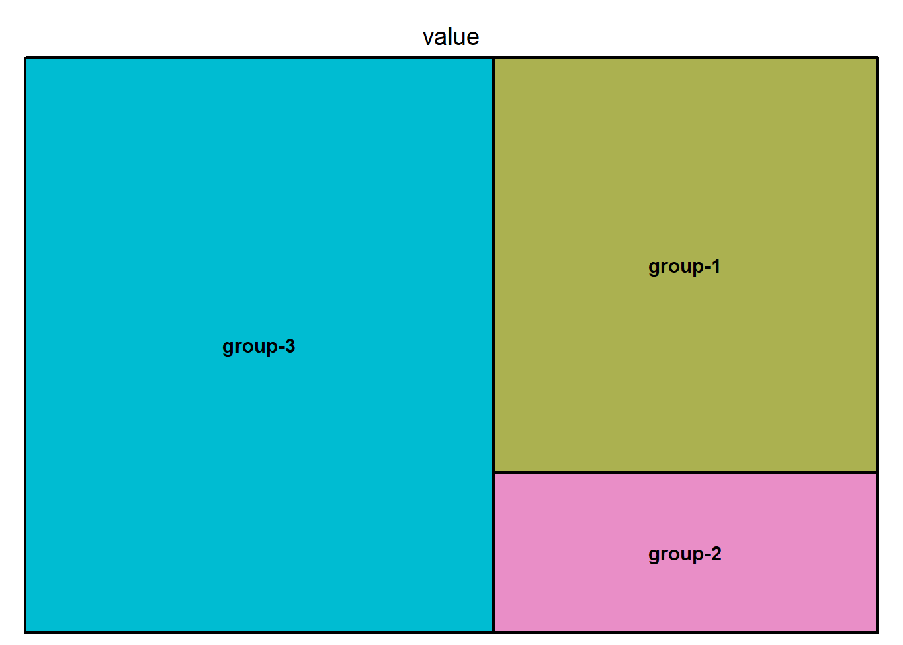
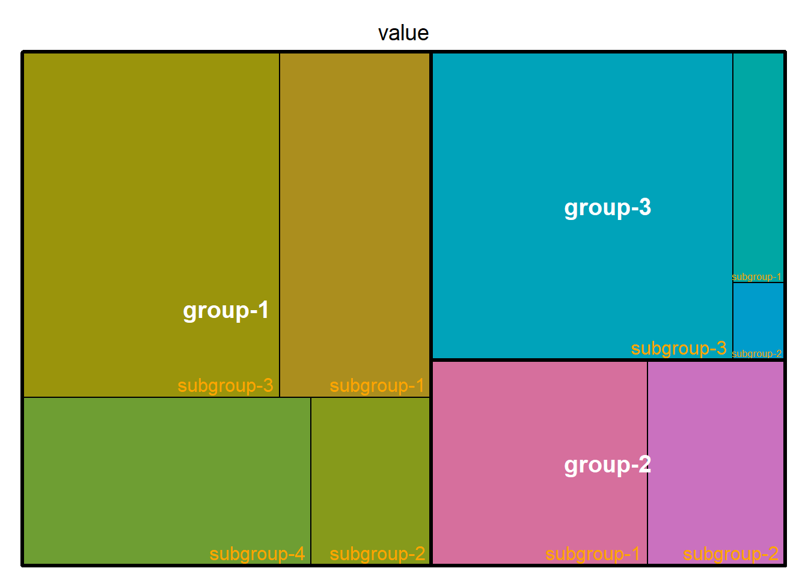

Show/Hide Code
library(treemap)
library(d3treeR) # 可选，用于交互式树图
# remotes::install_github("timelyportfolio/d3treeR")树图以嵌套矩形的集合形式展示层次结构数据。每个组由一个矩形表示，其面积与其值成正比。
library(treemap)
library(d3treeR) # 可选，用于交互式树图
# remotes::install_github("timelyportfolio/d3treeR")Treemap# 构建示例数据
group <- c("group-1", "group-2", "group-3")
value <- c(13, 5, 22)
data <- data.frame(group, value)
# 绘制基本的Treemap
treemap(data, index = "group", vSize = "value", type = "index")
# 构建带有subgroup的示例数据
group <- c(rep("group-1", 4), rep("group-2", 2), rep("group-3", 3))
subgroup <- paste("subgroup", c(1, 2, 3, 4, 1, 2, 1, 2, 3), sep = "-")
value <- c(13, 5, 22, 12, 11, 7, 3, 1, 23)
data <- data.frame(group, subgroup, value)
# 绘图
treemap(data, index = c("group", "subgroup"), vSize = "value", type = "index")treemap(
data,
index = c("group", "subgroup"), # 指定分组和子分组的变量名，决定树图的层次结构
vSize = "value", # 指定每个矩形面积对应的数据列
type = "index", # 颜色类型，这里按分组着色
fontsize.labels = c(15, 12), # 标签字体大小，分别对应group和subgroup
fontcolor.labels = c("white", "orange"), # 标签字体颜色，分别对应group和subgroup
fontface.labels = c(2, 1), # 标签字体样式，2为粗体，1为常规
bg.labels = c("transparent"), # 标签背景色，这里设置为透明
align.labels = list(
c("center", "center"), # group标签居中对齐
c("right", "bottom") # subgroup标签右下对齐
),
overlap.labels = 0.5, # 标签重叠容忍度，0为不允许重叠，1为总是显示
inflate.labels = F # 是否根据矩形大小自动放大标签，F为不放大
)
treemap(
data,
index = c("group", "subgroup"), # 指定分组和子分组的变量名，决定树图的层次结构
vSize = "value", # 指定每个矩形面积对应的数据列
type = "index", # 颜色类型，这里按分组着色
border.col = c("black", "white"), # 边框颜色，分别对应group和subgroup
border.lwds = c(7, 2) # 边框线宽，分别对应group和subgroup
)treemap(
data,
index = c("group", "subgroup"), # 指定分组和子分组的变量名，决定树图的层次结构
vSize = "value", # 指定每个矩形面积对应的数据列
type = "index", # 颜色类型，这里按分组着色，更多类型见 help(treemap)
palette = "Set2", # 选择调色板，这里用RColorBrewer内置的"Set2"配色
title = "My Treemap", # 设置树图的主标题
fontsize.title = 12 # 设置主标题的字体大小
)d3treeR点击一个组来放大并显示其子组。
点击顶部的组名可以取消放大并回到之前的状态。
# 加载d3treeR包
library(d3treeR)
# 绘制treemap对象，设置分组、子分组、面积、颜色、调色板和标签样式
p <- treemap(
data,
index = c("group", "subgroup"), # 指定分组和子分组，决定树图的层次结构
vSize = "value", # 指定每个矩形面积对应的数据列
type = "index", # 颜色类型，这里按分组着色
palette = "Set2", # 使用RColorBrewer的"Set2"配色方案
bg.labels = c("white"), # 标签背景色为白色
align.labels = list(
c("center", "center"), # group标签居中对齐
c("right", "bottom") # subgroup标签右下对齐
)
)# 使用d3treeR将静态treemap对象转为可交互的HTML小部件
d3tree2(p, rootname = "Treemap 示例")使用d3treeR实现可交互的Treemap